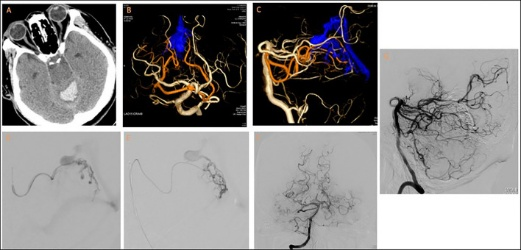
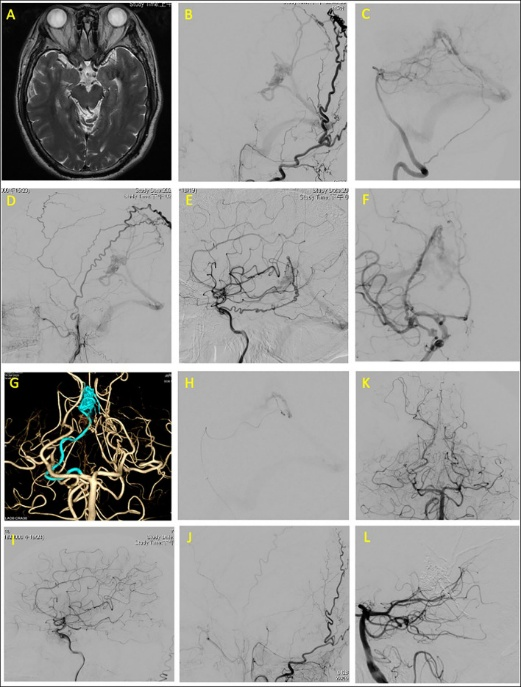
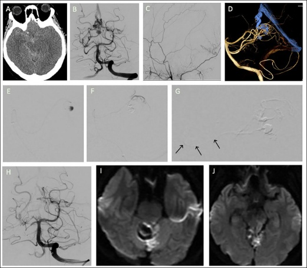
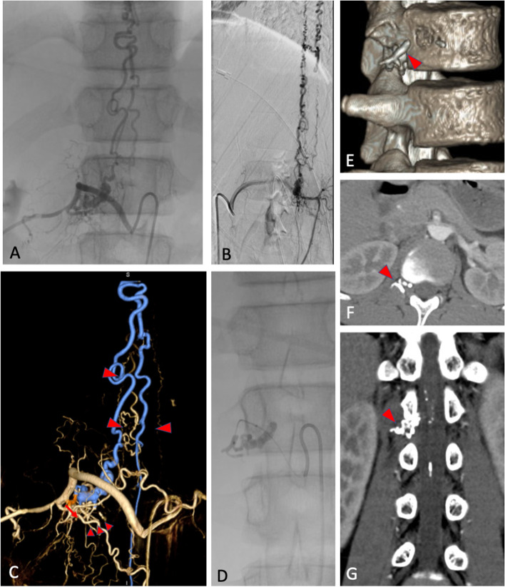
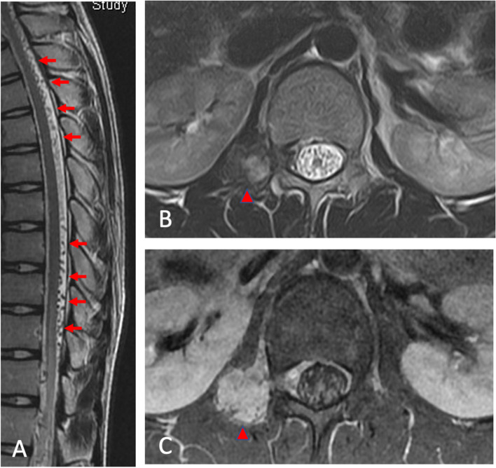
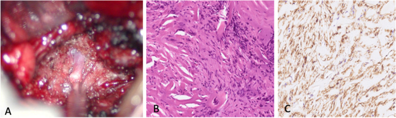
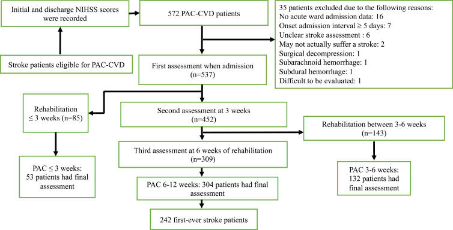
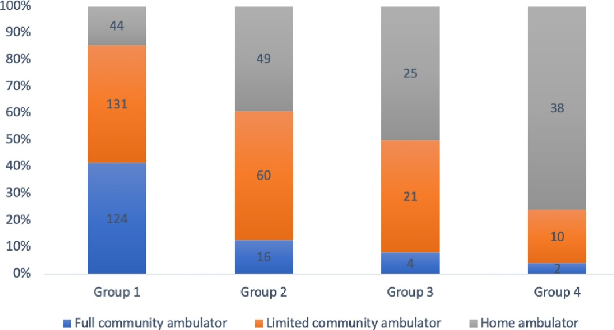
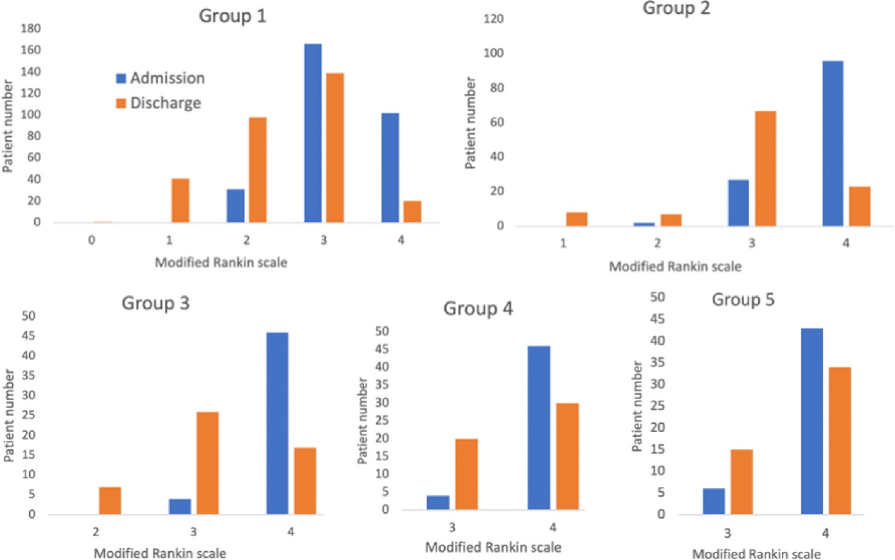

神經內科專科醫師 | 介入性神經血管內治療 | 腦中風取栓 | 神經肌肉骨骼超音波 | 在宅醫療／慢性病
🏥 臺北市立聯合醫院忠孝院區 主治醫師（非兼任）（2026/5–）
🎓 長庚大學 管理研究所博士班（2025/9–）
取得神經重症照護認證，具備神經重症病患系統性評估與照護能力，含急性腦血管病變及顱內壓監測處置。
2019 – 2024（中間休一年）
Frontiers in Neurology
2021 年 12 月
病例系列
林口長庚醫院

影像 1

影像 2

影像 3
BMC Pediatrics
2022 年 1 月
世界首例
青少年 SDAVF
合併結節性筋膜炎

影像 7

影像 8

影像 9
回顧性世代研究 · 桃園長庚 PAC 計畫
回顧性世代研究 · 桃園長庚 PAC 計畫
圖 4 — ICH 與缺血性中風 Barthel Index 改善軌跡

| 縮寫 | 全名（中文） | 評估面向 |
|---|---|---|
| BI | 巴氏量表 | 日常生活活動（ADL） |
| mRS | 改良型蘭金量表 | 整體失能程度 |
| FOIS | 功能性口腔進食量表 | 口腔進食功能 |
| MNA | 簡易營養評估 | 營養狀態 |
| MMSE | 簡短智能測驗 | 認知功能 |
| BBS | 伯格平衡量表 | 平衡功能 |
| FMA | 富格-邁爾評估 | 運動功能（上下肢） |
| NIHSS | 美國國立衛生研究院中風量表 | 中風嚴重度 |
| FIM | 功能獨立性測量 | 獨立功能表現 |
＊ 標記為統計顯著（p < 0.05）；來源：PMC7431596 Table 3
| 預測因素 | 結果指標 | 方向 | 顯著性 |
|---|---|---|---|
| 中風亞型：皮質下 ICH | BI 改善量 | ↑ 較 IS 更大進步 | ＊ p=0.03 |
| 中風亞型：皮質下 ICH | 晚期恢復軌跡 | ↑ 較長恢復期 | ＊ p<0.05 |
| 初始 Barthel Index | 出院 BI | ↑ 正相關 | ＊ p<0.001 |
| 年齡 | BI 改善量 | ↓ 越年輕改善越多 | ＊ p<0.05 |
| 初次中風 vs 再次中風 | BI 改善量 | ↑ 初次者改善較佳 | ＊ p<0.05 |
| 初始 NIHSS | 功能恢復 | ↓ 嚴重度越高改善越少 | ＊ p<0.05 |
| 初始 MMSE | BI 改善量 | ↑ 認知越佳改善越多 | ＊ p<0.05 |
| PAC 住院天數 | 步行能力恢復比率 | ↑ 正相關 | ＊ p<0.05 |
| 腦出血體積 | BI 改善量 | ↓ 體積越大改善越少 | ＊ p<0.05 |
圖 5 — 步行能力分層恢復比例（各嚴重度組）

圖 6 — PAC 出院功能預後預測

約兩年，專職神經骨骼肌肉超音波導引注射治療
取得居家醫療照護專業人員認證，具備居家診療、失能評估及跨專業協作能力。
參與在宅急症照護（Hospital at Home）試辦計畫，提供急症患者居家級醫院等級照護服務。
| 分類 | 證照 / 認證項目 |
|---|---|
| 🔵 核心執照與專科 | 醫師證書・醫師考試及格證明・神經科專科醫師證書・神經重症照護認證 |
| 🟠 腦血管與介入 | 介入性神經血管內治療證書・急性缺血性中風動脈取栓術資格・TSNIS 腦動脈瘤線圈栓塞課程 |
| 🟢 超音波（多系統） | 疼痛治療超音波・神經超音波進階・腸胃超音波進階・超音波基礎解剖・急性缺血性中風神經監測超音波・NMUSIT 神經肌肉工作坊・USMSIT 肌骨工作坊 |
| 🔴 居家照護／長照 | 居家醫療照護認證・在宅急症照護試辦・長照 Level 1・安寧緩和基礎・骨質疏鬆專科醫師・糖尿病共照・成人預防保健・戒菸衛教 |
| 🟣 神經調控 | tPBM 臨床證書・TMS 國際認證專家・TMS 春／秋季研討會・TMS/EEG 生物標記工作坊・VNS 參數設定認證・肉毒桿菌毒素注射訓練 |
| 🟤 急性照護 | 急性神經生命支持（ANLS）證書 |
| 法規與管制 | 輻防證書・管制藥品證書 |
| ⚫ 進階治療 | 細胞治療醫師訓練證明（第 115 年） |
| 🔷 學歷 | 大學畢業證書（醫學系） |
| 年份 | 期刊 | 主題 | 角色 |
|---|---|---|---|
| 2022 | Biomed J | PAC 中風步行能力恢復 | 第一作者 |
| 2022 | BMC Pediatr | 世界首例青少年 Spinal DAVF + 結節性筋膜炎 | 第一作者 |
| 2021 | Front Neurol | Medial Tentorial DAVF 血管內治療病例系列 | 第一作者 |
| 2021 | Diagnostics | 機器學習預測中風後功能預後 | 共同作者 |
| 2021 | Eur J Neurol | 年輕成人 AIS 取栓術多中心研究 | 共同作者 |
| 2020 | Neuropsychiatr Dis Treat | ICH vs 缺血性中風 PAC 功能恢復型態 | 第一作者 |
定期前往健身房訓練，維持良好體能狀態。重訓有助於紓解臨床工作壓力、保持身心健康，也與神經肌肉系統的臨床研究方向相輔相成。